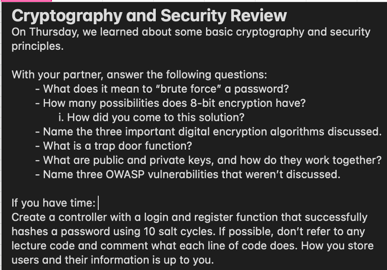

Answers
Forcing a password means to attempt all possible combinations
with hardware.
8-bit encryption has 256 possibilities. Each bit being 2
possibilities (0 or 1), times 8.
DES, meaning "data encryption standard" (no longer safe).
Triple-DES (3DES), meaning "triple data encryption algorithm".
AES, meaning "advance encryption standard", which is very secure.
A trapdoor function is one that's easy to compute in one direction,
but very hard to do in the opposite direction (find its inverse)
without special information, called the "trapdoor".
A "public key" in cryptography refers to the asymmetric approach
where two different keys are used, one for encryption and another
for decryption. The public key is sent to encrypt the information
and send it to the target, while the "private key" only known
by the recipient, is used to decrypt and retrieve the information.
1- A "watering hole attack" is a computer attack strategy in which
an attacked guesses or observes which websites an organization often
uses and infects one or more of them with malware. Eventually, some
member of the targeted group will become infected.
2- DDoS, or "distributed denial of service" occurs when multiple systems
flood the bandwidth or resources of a targeted system, usually one or
more web servers. Generally, a DDoS attack uses IP addresses from thousands
of hosts infected with malware. DDoS typically involves 3-5 nodes on different
networks, while DoS attacks involve less nodes in number.
3- "Social Engineering" is the psychological manipulation of people
into performing actions of divulging confidential information.